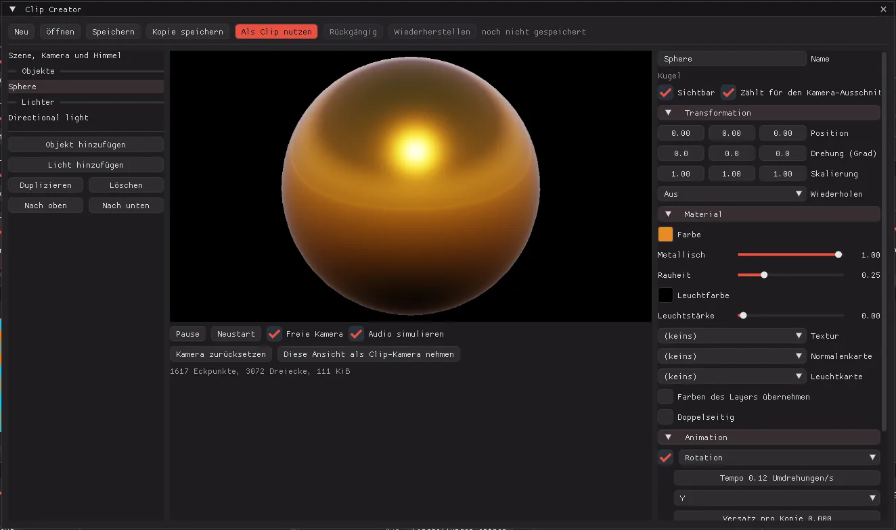

Inhalt
Erste Schritte
- Willkommen bei NyrexVJ
- Installation und erster Start
- Das Fenster im Überblick
- Deine erste Show in fünf Minuten
Visuals spielen
- Das Clip-Raster
- Decks und Übergänge
- Layer und Mischmodi
- Das Clip-Fenster
- Effekte
- Die Bibliothek
- Presets und Sitzungen
- Das Master-Fenster
Musik und Bewegung
Eigene Inhalte
- Video- und Bild-Clips
- Deine eigenen Shader
- 3D-Modelle
- Der Clip Creator
- Text, Partikel und Effektketten
- Der Node-Effekt-Editor
- Live-Quellen: Spout, NDI und Kameras
Ausgabe und Aufnahme
Live-Steuerung und Shows
- Steuerung: MIDI, OSC und die Webseite
- Show-Sync und Timecode
- Die Show-Zeitleiste
- Bühne: DMX, VRSL und VRChat
- Plugins
Nachschlagen und Hilfe
Handbuch / Eigene Inhalte
Der Clip Creator
#Was er ist
Der Clip Creator baut deine eigenen 3D-Szenen aus Formen, Modellen und Lichtern. Du lässt alles zur Musik bewegen und speicherst das Ergebnis als portable .nyxclip-Datei. Die Szene spielt dann wie jeder andere Clip. Öffne ihn über das Menü Creator, Clip Creator öffnen.
#Die drei Spalten
- Die linke Spalte listet die Objekte, die Lichter und die Szenen-Einstellungen. Objekt hinzufügen bietet Kugel, Würfel, Zylinder, Kegel, Fläche, Ring (Torus), Torusknoten und Modell aus der Bibliothek. Licht hinzufügen gibt ein Gerichtetes Licht oder ein Punktlicht, bis zu vier.
- Die Mitte zeigt eine Live-Vorschau. Zieh, um zu orbiten, und nutze das Mausrad zum Zoomen. Freie Kamera, Audio simulieren und Kamera zurücksetzen helfen beim Umsehen, und Diese Ansicht als Clip-Kamera nehmen behält die gefundene Ansicht.
- Die rechte Spalte ist der Inspektor für das gewählte Objekt. Er hat Transformation (Position, Drehung, Skalierung), Wiederholen (ein Ring oder eine Reihe von Kopien), Material, Textur, Animation, Audio-Reaktionen und die Einstellungen für Kameras und Himmel.


#Objekte, Materialien und Animation
Ein Material hat eine Farbe, Metallisch, Rauheit, eine Leuchtfarbe und -stärke und optional Textur, Normal Map und Glow Map. Hak Farben des Layers übernehmen an, damit das Objekt die Farben des Layers nimmt, auf dem es spielt, so lässt sich eine Szene mit einem Klick umfärben. Animation bietet Bewegungen wie Rotation, Wippen, Kreisen, Pulsieren und Schwanken, jede mit eigenen Einstellungen wie Tempo, Höhe oder Radius.
Unter Audio-Reaktionen hat jedes Objekt vier Zeilen. Eine Zeile hat ein Kästchen, eine Quelle und ein Ziel. Die Quelle ist Bass, Mitten, Höhen, Pegel, Kick, Beat (ein Puls, der der Beat-Uhr folgt und deshalb auch mit Tap-Tempo und ohne Ton läuft) oder eines von acht Bändern, die das Spektrum von tief bis hoch aufteilen. Das Ziel ist Größe, Glühen, Verdrehung oder Anheben, oder eines, das das Material ändert: Farbverschiebung dreht den Farbton (1,00 ist eine ganze Drehung, 0,33 macht aus Rot Grün), Rauheit macht die Oberfläche matter oder glänzender, Textur-Versatz X und Y schieben die Textur, Aufblasen drückt die Oberfläche entlang ihrer Normalen nach außen und Wellen schickt eine Welle darüber. Zeilen mit demselben Ziel addieren sich, und ein Kind-Objekt übernimmt, was sein Elternteil bekommen hat. Die Musik kann auch die Lichtstärke und die Kamera bewegen: Zoom, Kreisen, Neigung, Rollen, Sichtfeld und den Punkt, auf den sie schaut.
Farbverschiebung, Rauheit und Textur-Versatz ändern, was der Shader zeichnet; Aufblasen und Wellen bewegen die Punkte der Form und behalten die alten Normalen, deshalb wird eine tiefe Welle auf einer scharfen Form beleuchtet, als wäre sie flach. Eine Textur, die um eine ganze Zahl verschoben wird, landet wieder am Anfang. Ist Audio simulieren angehakt, spielt die Vorschau eine feste Schein-Musik, damit derselbe Moment immer dasselbe Bild gibt, und eine gespeicherte Szene behält ihre Zeilen. Eine Szene, die nur die alten Quellen, die alten Ziele und zwei Zeilen nutzt, wird wie bisher gespeichert und öffnet sich in älteren Programmen; eine, die mehr nutzt, braucht 0.68.0 oder neuer. Eine Zeile mit einer Quelle oder einem Ziel, das das Programm nicht kennt, wird weggelassen und in den Warnungen unter der Vorschau genannt. Der Schalter Musik bewegt 3D-Materialien unter Einstellungen, Leistung schaltet die sechs Material-Ziele ab; Größe, Glühen, Verdrehung, Anheben, Licht und Zoom folgen der Musik weiter.
#Kameras und Himmel
Eine Szene kann bis zu acht Kameras enthalten. Wähl die, die spielt, oder lass den Clip mit Schnitt (Beats) alle paar Beats zwischen allen schneiden. Eine Kamera hat einen Abstand, einen Höhenwinkel, einen Startwinkel, ein Sichtfeld, eine Kreisgeschwindigkeit und ein Höhen-Schwanken. Rollen dreht das Bild um die Blickachse. Verschieben X, Y und Z verschieben den Punkt, auf den die Kamera schaut, in Szenenradien, und die Kamera geht mit. Einstellungslänge (Beats) hält diese Kamera für ihre eigene Zahl von Beats; 0 nimmt Schnitt (Beats). Himmel und Belichtung legen die Farben von Himmel, Horizont und Boden, die Himmelshelligkeit und die Belichtung fest.
Gleiten. Steht Zur nächsten Kamera gleiten über 0, springt die Kamera beim Schnitt nicht. Über den letzten Teil jeder Einstellung, 1,00 ist die ganze Einstellung, fährt sie in die Lage der nächsten Kamera, mit der Gleitkurve Weich oder Linear (dieselben Kurven wie die Keys der Show-Timeline). 0 ist der alte harte Schnitt. Das Gleiten folgt der Beat-Uhr wie die Schnitte, es läuft also auch mit Tap-Tempo und MIDI-Clock.
Musik auf der Kamera. Die Zielliste einer Kamera-Zeile hat Zoom, Kreisen, Neigung, Rollen, Sichtfeld und Verschieben X, Y und Z. Ein Wert von 1,00 dreht die Kamera um 90 Grad um die Szene (Kreisen), neigt sie um 45 Grad (Neigung), rollt sie um 45 Grad (Rollen), weitet die Linse um 30 Grad (Sichtfeld) oder verschiebt den Blickpunkt um einen halben Szenenradius (Verschieben). Der Höhenwinkel bleibt zwischen plus und minus 85 Grad und das Sichtfeld zwischen 15 und 110.
Kameras aus einem Modell. Hat ein Modell der Szene Kameras, stehen sie unter Kameras in den Modellen. Kamera … verwenden fügt eine als Kamera der Szene ein, mit dem Sichtfeld aus der Datei. Es ist die Lage, die die Kamera der Datei in Ruhe hat, relativ zur Mitte und Größe der ganzen Szene; eine Animation der Kamera wird nicht abgespielt, sie folgt dem Modell nicht, wenn du es später verschiebst, und eine Kamera, die keine perspektivische ist, lässt sich nicht benutzen.
Am Layer. Für einen Szenen-Clip hat das Clip-Fenster einen Abschnitt Kamera mit Kamera kreisen (plus und minus 180 Grad), Kamera neigen (plus und minus 60) und Kamera-Sichtfeld (plus und minus 30). Sie kommen zur Kamera der Szene dazu und sind Steuerziele (layer/N/camera-orbit, camera-tilt, camera-fov), MIDI, OSC, die Weboberfläche und die Spuren der Show-Timeline können sie also steuern; eine Kamerabewegung über die Zeit ist eine Spur mit Keys. 0 lässt die Kamera in Ruhe.
Der Schalter Kamerabewegung in 3D-Szenen unter Einstellungen, Leistung schaltet das alles ab: kein Gleiten, Rollen, Verschieben des Blickpunkts und keine Einstellungslänge, und die Kamera-Ziele und die drei Layer-Regler werden ignoriert. Schnitte und Zoom laufen weiter. Eine Szene, die nichts davon nutzt, wird wie bisher gespeichert und öffnet sich in älteren Programmen; eine, die es nutzt, braucht 0.69.0 oder neuer. Das ist eine virtuelle Kamera, die sich in der Szene bewegt; NyrexVJ folgt keiner echten, physischen Kamera.
#Vorlagen, Speichern und Benutzen
Starte mit einer Vorlage (Menü Creator, Mit einer Vorlage starten, oder Öffnen im Fenster) oder mit einer leeren Szene über Neu. Speichern schreibt eine .nyxclip-Datei in den Ordner clips. Sie enthält die Szenenbeschreibung und als Kopien die .glb-Modelle und die PNG- oder JPEG-Texturen, die die Szene nutzt, bis zu 200 MiB, eine Datei reicht also, um eine Szene weiterzugeben. Sie erscheint dann in der Bibliothek unter Szenen als Scene: Name. Als Clip nutzen legt sie außerdem in die gewählte Zelle des Decks. Kopie speichern speichert die Szene unter einem neuen Namen.
In einer Szene lassen sich nur .glb-Modelle speichern. Eine .gltf-Datei, die getrennte Dateien braucht, steht in der Ansicht Dateien, lässt sich aber nicht nutzen. Rückgängig und Wiederherstellen funktionieren im Creator, solange er den Fokus hat. Eine ungespeicherte Szene liegt im Ordner recovery, falls das Programm unerwartet schließt.
Fehler gefunden oder etwas vergessen? Sag es uns auf GitHub. Dasselbe Handbuch steckt im Programm, du hast es also auch ohne Internet. Öffne es mit F1 oder über das Menü Hilfe, Handbuch.